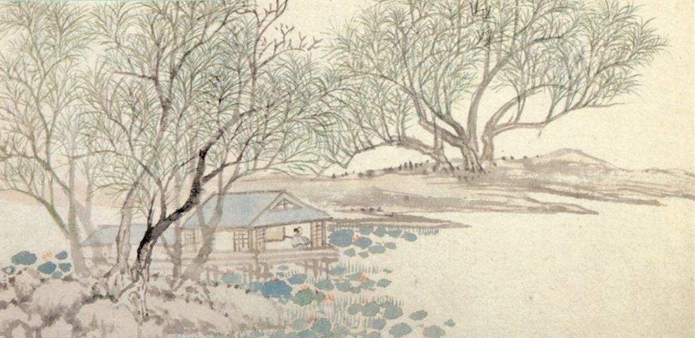

|
|  | 钱塘湖春行 其一 天街小雨润如酥，草色遥看近却无。 最是一年春好处，绝胜烟柳满皇都。 其二 莫道官忙身老大，即无年少逐春心。 凭君先到江头看，柳色如今深未深。 |
词句注释 ⑴呈：恭敬地送给。 ⑵水部张十八员外：指张籍（766—830年）唐代诗人。在同族兄弟中排行第十八，曾任水部员外郎。 ⑶天街：京城街道。 ⑷润如酥：细腻如酥。酥：动物的油，这里形容春雨的细腻。 ⑸最是：正是。 ⑹处：时。 ⑺绝胜：远远胜过。 ⑻皇都：帝都，这里指长安。 ⑼官忙身老大：韩愈写此诗时任吏部侍郎，公务繁忙，故云“官忙”；韩愈时年56岁，故云“身老大”。身老大，年纪大。 ⑽即：已经。 ⑾凭：这里作“请”讲。 ⑿江：曲江，位于唐代京城东南角，为游览胜地，遗址在今陕西西安东南部。 |
|
白话译文 其一 京城大道上空丝雨纷纷，它像酥油般细密而滋润，远望草色依稀连成一片，近看时却显得稀疏零星。这是一年中最美的季节，远胜过绿柳满城的春末。 其二 不要说官事冗杂，年纪老大，已经失去了少年时追赶春天的心情。请你忙里偷闲地先到江边游春散心，看看如今的柳色是否已经很深。 |
|

唐诗学习网 Copyright© 2018 All Right Reversed
|